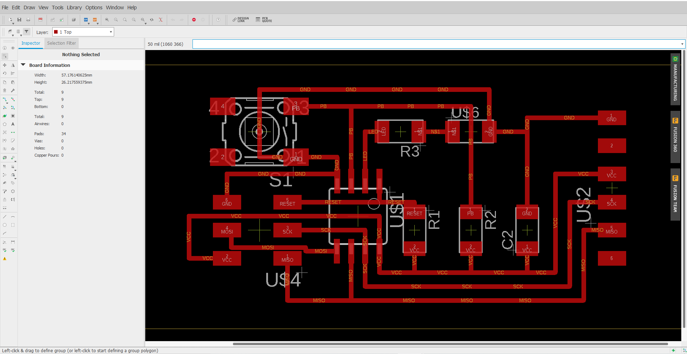
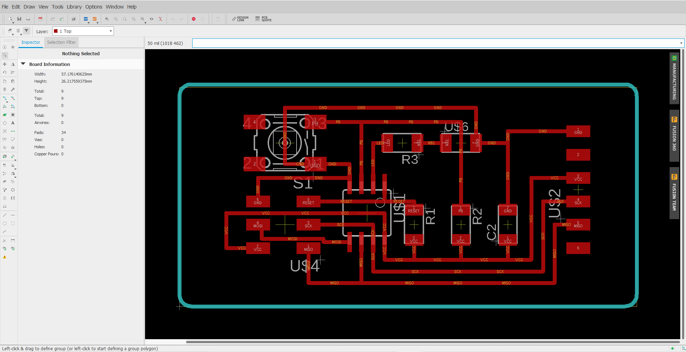
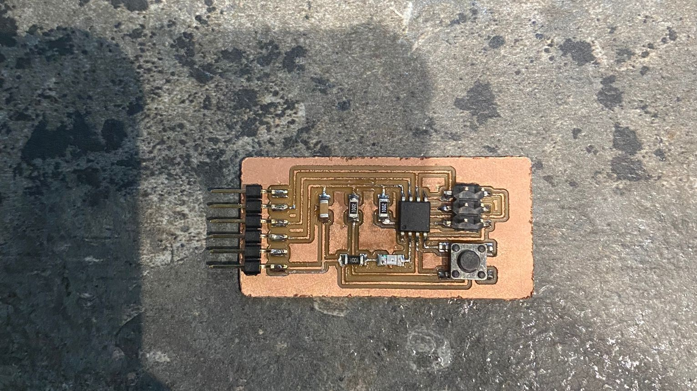

Electronic Design
In electronic design, the basic circuit is made before generating the png for the G-code. we have to use a CAD tool to design the schematic and layout.
Step 1: EAGLE
I started by downloading and installing the component librbary needed for the board. (fab.lr)
I then placed the downloaded library into the EAGLE library, before going to the directory to select the library.
Step 2: Creating the schematic
- Add in the right components for your board.
- Use NET tool to wire our parts together.
- Use NAME tool to identify our components/name our nets.
- Use VALUE tool to set resistors resistance or capacitors capacitance.
- Verify the design using ERC.
- Go to board view to position our components and route traces.
You can refer to this link for more information on how to create a schematic. https://learn.sparkfun.com/tutorials/using-eagle-schematic

Once the layout was done, i had to switch to Board view and i re-arranged all the components to fit the wires properly using the manual routing system, finding the shortest and simplest route possible.

Finally after the layout was done, the outline was added to finalise the circuit.

Step 3: G-code, milling and soldering
Next, using the same mods programme for the electronics production i used it to create the G-code.
The next few steps for milling and soldering was repeated for the electronics production.
Final Product
